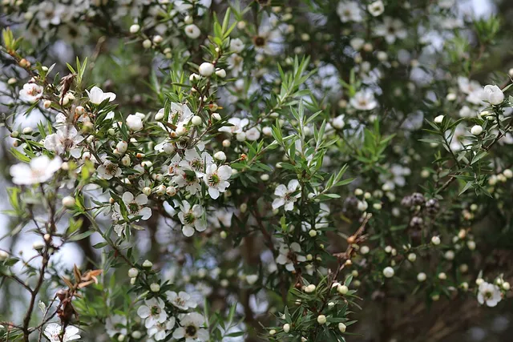
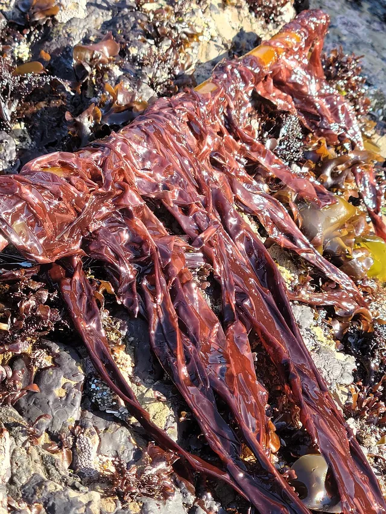

Wild food recipes from New Zealand
25 dishes made with foraged ingredients, from drinks and preserves to mains and desserts.
Drinks
 Kawakawa teaKawakawa
Kawakawa teaKawakawa
Mānuka teaMānuka Elderflower cordialElderflower
Elderflower cordialElderflower Harakeke nectar waterHarakeke nectar
Harakeke nectar waterHarakeke nectar Elderberry syrupElderberry
Elderberry syrupElderberry
Starters & snacks
 Pipi frittersPipi and tuatua
Pipi frittersPipi and tuatua Pikopiko in butterPikopiko
Pikopiko in butterPikopiko Steamed kōukaKōuka
Steamed kōukaKōuka Pāua frittersPāua
Pāua frittersPāua Kina on toastKina
Kina on toastKina Steamed tuangi with kawakawaTuangi cockles, Kawakawa
Steamed tuangi with kawakawaTuangi cockles, Kawakawa
Sauces, preserves & sides
 Horopito saltHoropito
Horopito saltHoropito- Kawakawa pestoKawakawa
 Blackberry jamBlackberry
Blackberry jamBlackberry Pickled nasturtium capersNasturtium
Pickled nasturtium capersNasturtium Wild plum sauceWild plums
Wild plum sauceWild plums
Main course
 Pork and pūhā boil-upPūhā, Watercress
Pork and pūhā boil-upPūhā, Watercress
Karengo brothKarengo Nettle soupStinging nettle
Nettle soupStinging nettle Green-lipped mussel chowderGreen-lipped mussels, Native celery
Green-lipped mussel chowderGreen-lipped mussels, Native celery Watercress and pork boil-upWatercress
Watercress and pork boil-upWatercress
 Kōnini jam on sconesKōnini
Kōnini jam on sconesKōnini